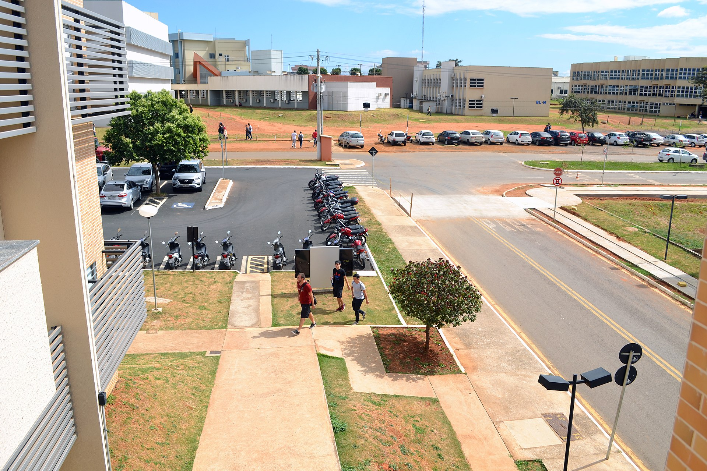

UFCAT - Universidade Federal de Catalão.
A Universidade Federal de Catalão (UFCAT) é uma instituição de ensino superior pública federal brasileira,
sediada na cidade de Catalão, estado de Goiás. Foi criada em 20 de março de 2018, a partir do desmembramento da
Universidade Federal de Goiás. É uma das três universidades federais do estado, ao lado da Universidade
Federal de Goiás (UFG) e da Universidade Federal de Jataí (UFJ).
Biblioteca universitária da UFCAT.
A biblioteca Universitária foi fundada juntamente com a universidade e atualmente abriga mais de 2.000*
livros em seu acervo, contendo os mais variados gêneros literários e tipos textuais, e embora não seja tão completa
quanto uma biblioteca municipal, ela é capaz de atender adequadamente todos os cursos ministrados pela instituição.

Sistema de biblioteca BIA
O sistema de biblioteca BIA foi criado a partir de uma porposta inicial de oferecer um sistema virtual para a
biblioteca universitária da UFCAT, uma vez que a instituição não conta com um sistema próprio desde seu desmembramento
do sistema regional da Universidade Federal de Goiás, dificultando o acesso de vários alunos á biblioteca da
instituição de ensino.